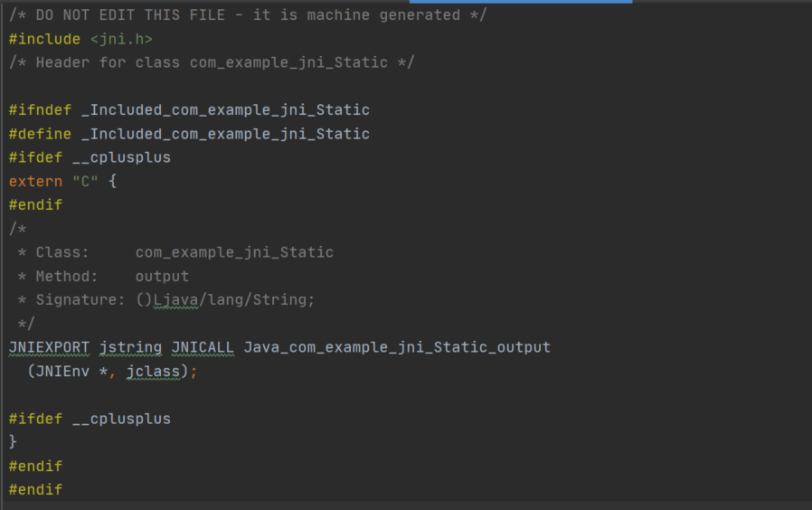
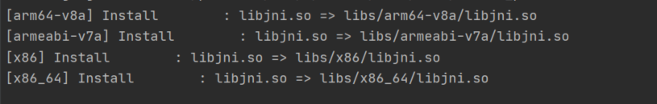
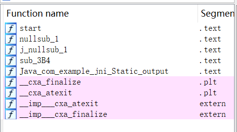
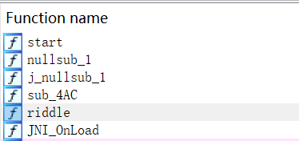
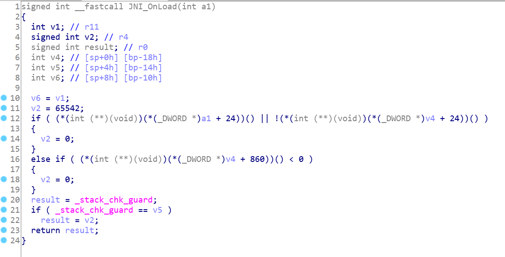
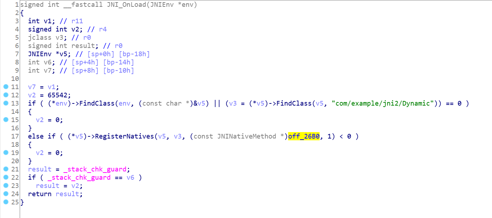
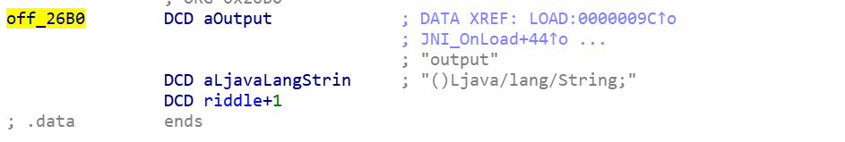
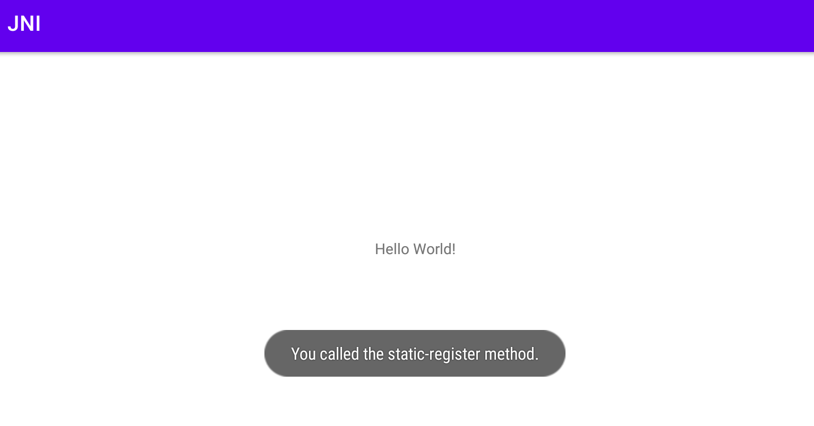
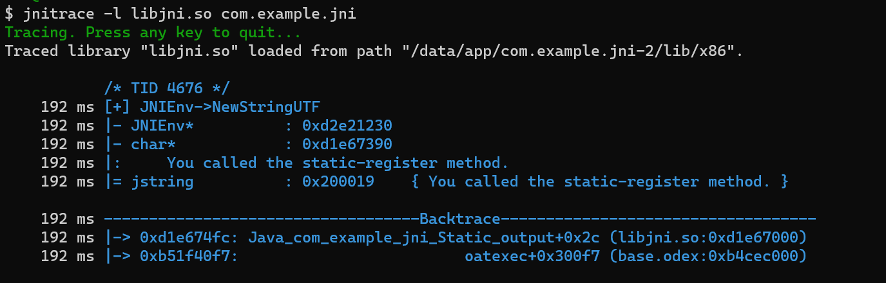

JNI 101
本章参考： 《深入理解Android 卷Ⅰ》
在逆向so文件时，我们经常遇到/发现：
- 找不到Java层native函数对应的JNI函数；
- 要把JNI函数的第一个参数改为
JNIEnv *env以便识别； - 加载so时，频繁调用
NewStringUTF、ReleaseStringUTFChars等字符串函数。
在深入理解JNI (Java Native Interface) 之后，我们可以解释上述现象。
JNI函数注册，即将Java层的native函数与其对应的JNI函数关联起来，以实现在Java层调用JNI函数。有两种注册方式，静态注册与动态注册。
首先，我们来看较为简单的静态注册。创建一个类Static，其中加载了名为jni的库，并调用了JNI函数output：
1 | package com.example.jni; |
使用javac编译，并用javah生成对应的JNI头文件com_example_jni_Static.h：

在该文件中，我们可以看到它声明了native函数output。无参函数output，此时拥有了两个参数JNIEnv和jclass。第一个参数JNIEnv，代表着当前的JNI环境；第二个参数代表当前类，若native函数为static，参数为jclass，其他为jobject。
接着，在com_example_jni_Static.c中实现该函数：
1 |
|
使用ndk-build生成libjni.so：

此时，使用IDA分析libjni.so，我们可以轻而易举地定位output函数：

其构成为：Java_包名_函数名。需要注意，包名中的.，都被转换为_，另外，如果函数名中含_，将被转换为l_。
于是，在静态注册中，当Java层调用output函数时，会在对应的JNI库中寻找Java_com_example_jni_Static_output来建立关联关系。而实际上，这种方式会影响运行效率，同时被逆向的风险较大。
那么我们来看动态注册。首先介绍一下JNINativeMethod：
1 | typedef struct { |
动态注册，便是使用这样一个结构体来存储Java层函数与JNI指针的对应关系，以克服效率上的弊端。
创建一个类Dynamic：
1 | package com.example.jni2; |
编写com_example_jni2_Dynamic.c：
1 |
|
代码的前半部分，包括riddle函数的实现和元素为JNINativeMethod的动态注册表g_methods。先来看JNINativeMethod，函数名为output，函数签名为()Ljava/lang/String，JNI层指针为riddle。其中，函数签名的格式为(参数1类型;参数2类型...;)返回值类型，我们可以使用javap工具快捷生成函数签名。
可知，output函数对应的JNI函数为riddle。正如IDA中看到的一样：

非开发者逆向时，自然难以得知output与riddle相关联，可见动态注册变相增加了逆向的难度。
那在对抗动态注册时，如何定位native函数的实现呢？我们结合上文JNI_OnLoad的源码来进行分析。在Java层通过System.loadLibrary加载完so库后，会调用JNI_OnLoad函数，这是唯一有机会进行动态注册的地方。
IDA中的JNI_OnLoad函数初始如下：

修改JNIEnv参数：

可以看到动态注册函数RegisterNatives得到还原。对照源码可知，其第三个参数为动态注册表g_methods。来到off_26B0处：

发现动态注册表，成功定位output函数。
最后，我们再来解释一下开头提出的现象3。我们在Java层调用output函数：
1 | public class MainActivity extends AppCompatActivity { |
使App在创建时弹出output返回的字符串，效果如下：

使用JNITrace跟踪libjni.so的加载情况：

可见，JNIEnv对我们输入的字符串调用了NewStringUTF生成了jstring对象。JNI层中，正式借助此类函数对jstring对象，即Java层的String对象，进行操作。在实际开发时，进行此类操作后，需要调用ReleaseStringUTFChars释放资源，以防JVM内存泄漏。